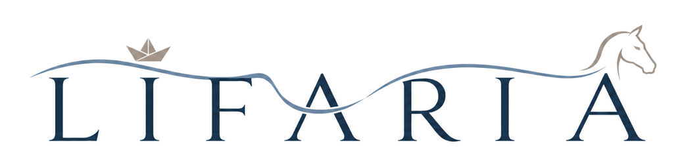
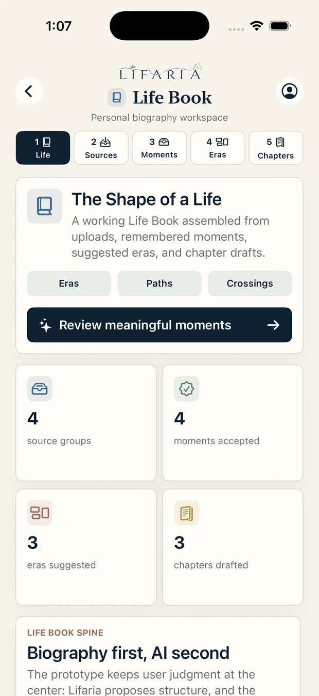
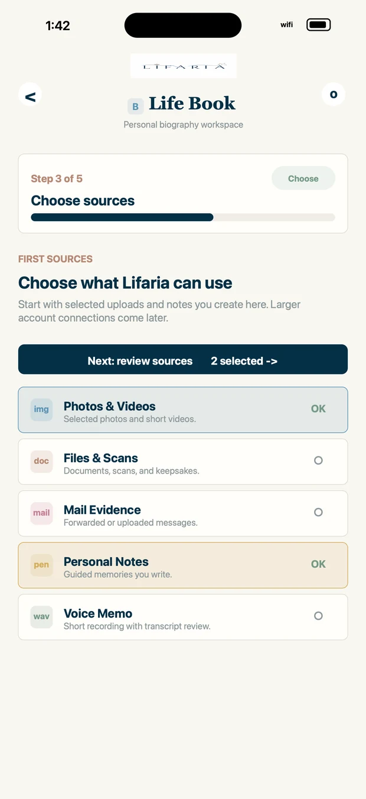
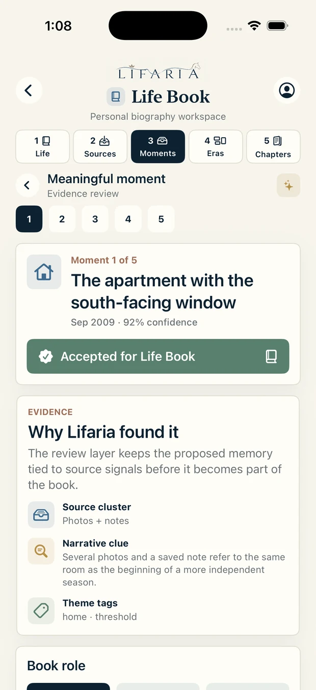

Make ambiguity usable
Turn fast-moving, regulated, or emotionally complex domains into clear product choices.

Lana Schuler's Life AriaLife Aria / responsible AI / source-backed memory
This is the home for my Lifaria bits: product leadership, responsible AI, the Life Book beta, theatre, memory, and weekly haiku gathered into one Life Aria.
Lifaria as the umbrella for product work, memory, theatre, and poems.
Responsible AI, privacy-first personalization, governance, and user trust.
TheatreWorks board service, weekly bilingual haiku, and notes on memory.
Home
Lifaria is the roofline for this site: a Life Aria made from the professional and personal work that usually lives in separate rooms. Product leadership in responsible AI, source-backed memory, board service in live theatre, and a year of weekly haiku all belong to the same practice of attention.
The connective tissue is attention. How do we design technology that remembers without overreaching, personalizes without reducing a person to signals, and tells stories without taking ownership away from the person whose life is being shaped?
Turn fast-moving, regulated, or emotionally complex domains into clear product choices.
Treat governance, consent, signal use, and memory as first-order design decisions.
Use AI to propose structure, not to flatten biography, creativity, or taste.
Bio
Lana Schuler is a product executive in Product Leadership at Google, with deep experience across responsible AI, privacy-first platforms, consumer technology, communications, mobility, e-commerce, and AdTech.
Across more than two decades, she has worked in startups, growth-stage companies, and enterprise environments, shaping product vision, turning ambiguous spaces into durable strategy, and leading cross-functional teams through growth and transformation.
Her current work centers on privacy-first AI personalization: product architecture, governance models, memory and context handling, safe user-signal integration, and the trust requirements that determine whether intelligent systems deserve a place in daily life.
Outside the formal product lane, Lana is building Lifaria, a private Life Book workspace; serves on the TheatreWorks Silicon Valley Board of Trustees; and keeps a weekly bilingual haiku practice in English and Russian.
Lifaria beta
Lifaria turns selected photos, notes, files, and voice into meaningful moments, eras, and chapters. It is a biography tool with AI in service of the person, not a system that claims the story for itself.
Moments and chapters stay connected to the photos, files, notes, or memories that support them.
Lifaria is designed around review, acceptance, editing, and ownership rather than automatic biography.
The product direction favors consent, inspection, and personal control over extraction or spectacle.
Sources become moments; moments suggest eras; eras can become a Life Book with a coherent spine.



TheatreWorks / practice
Lana serves on the TheatreWorks Silicon Valley Board of Trustees, supporting the organization’s mission, long-term sustainability, and community role. The work brings product and technology judgment into a cultural setting where the measure is not only efficiency, but resonance.
Theatre sharpens the same instincts required in product leadership: pacing, stakes, audience trust, emotional truth, and the courage to revise until the room changes.
Strategy, sustainability, community relevance, and support for new work.
How a room grants attention, when it withdraws it, and what earns it back.
Best line, strongest scene, design choice, emotional residue, and structure under pressure.
Haiku, theatre, forest walks, and story-gathering as ways to keep perception precise.
Weekly haiku
The haiku archive is a weekly practice of noticing: nature, luck, fatigue, synchronicity, ritual, and the ordinary details that become visible when language is kept small.
June 26th - 52ndFortune finds the door!
Luck pours in and stays for good.
River finds the sea!
Blog
Why personalization systems need explicit choices about what they remember, forget, infer, and expose.
How a biography tool can keep sources, approvals, and edits close to every generated chapter.
Iteration, timing, audience trust, and the difference between a correct answer and a living one.
How constraint turns attention into a practice rather than a mood.
How to make progress when the system is changing, the stakes are real, and certainty would be premature.